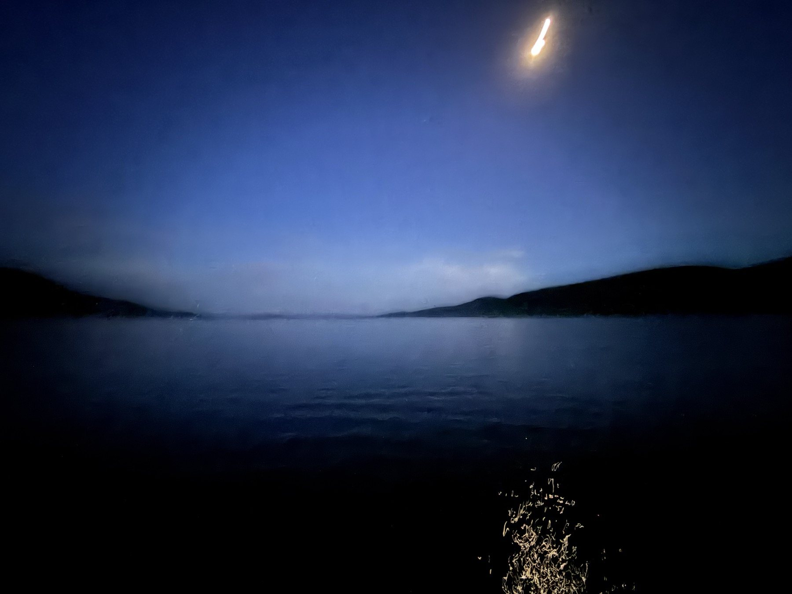
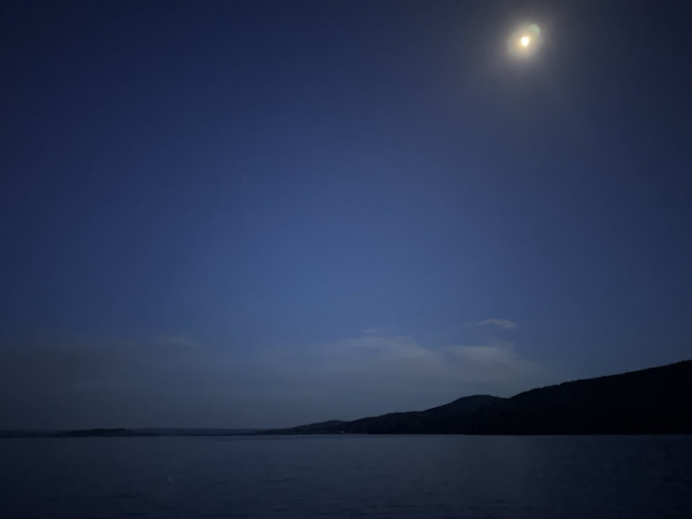

小序
丙午之春，余客美國加利福尼亞大學洛杉磯分校訪學，居洛城數月。其地瀕太平洋，長春無冬，紫楹滿街，月色如銀。每當夜闌人靜，獨立窗前，見海上明月，輒念神州故園——始知此月，即故鄉之月也。因擬唐張若虛《春江花月夜》之體，七言三十六句，九段遞韻，移其江海於太瀛之東，綴以校園紫楹、羈旅鄉思，成此一篇，聊寄客懷。
春城潮滿海初平，海上冰輪逐浪生。
灩灩金波連萬里，天涯何處不澄明。
華光宛轉繞芳甸，月照紫楹花似霰。
流霜不覺度迴廊，滿地瓊英人未見。
海天一色淨無塵，皎皎孤輪掛海濱。
異國何人初見月？清輝何歲始臨人？
人生代代無窮已，海月年年長此似。
不知此月待何人，但見滄波流不止。
白雲一片去悠悠，隔海西望起鄉愁。
何處天涯孤館客？誰家今夜倚危樓？
可憐窗上月徘徊，應照天涯獨望臺。
簾卷不收清影去，燈前拂去又還來。
此時相望不相聞，願逐流光照故君。
鴻雁難飛逾大海，魚龍不寄一行文。
昨夜幽庭夢落花，可憐春半未還家。
韶光逐水行將盡，海月低城又半斜。
斜月沉沉藏海霧，神州此去無窮路。
不知乘月幾人歸，落月搖情滿庭樹。
丙午孟夏，客於洛城西郭，擬張若虛體。
行旅影像 · 月夜與山水
選自美國、加州與黃石之旅。月色、湖光、雪峰與校園草木，皆為此篇客中詩意所由生。



箋註 · 出處與作意
每段對讀：「出處」為張若虛原句，下方為本篇對應之句，「作意」略述為什麼這麼寫。
作意所及之實景，可參上方行旅影像：月夜湖光取 IMG_0950、IMG_0951、IMG_0953、IMG_0960、IMG_0961；暮色湖山取 IMG_0779、IMG_0776、IMG_0764；校園草木取 IMG_0163。
註釋 · 詞語
跋
張若虛《春江花月夜》，聞一多譽為「詩中的詩，頂峰上的頂峰」，又有「孤篇橫絕，竟為大家」之稱。其以春、江、花、月、夜五字，寫盡宇宙之無窮、人生之有限、遊子思婦之深情。
今擬其體而易其境：春則加州之長春，江則太平洋之萬頃，花則紫楹之如雪，夜則洛城之燈月；獨「月」一也——海上明月，天涯共之。九段遞韻，一仍其舊；末二段徑用原作「花·家·斜」「霧·路·樹」之韻，以志淵源，亦以見「人生代代無窮已，江月年年望相似」之旨：地雖易而月不改，身雖客而情自深。